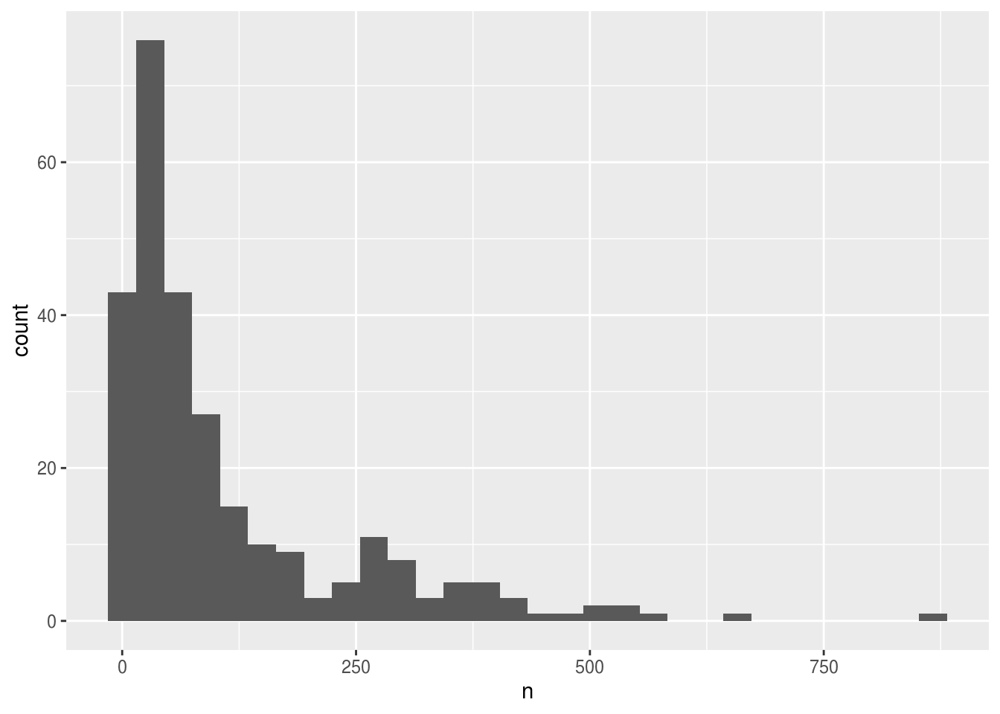
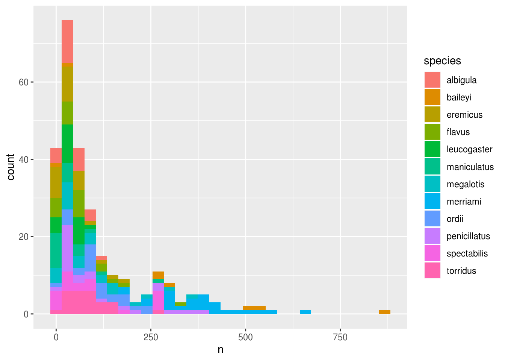
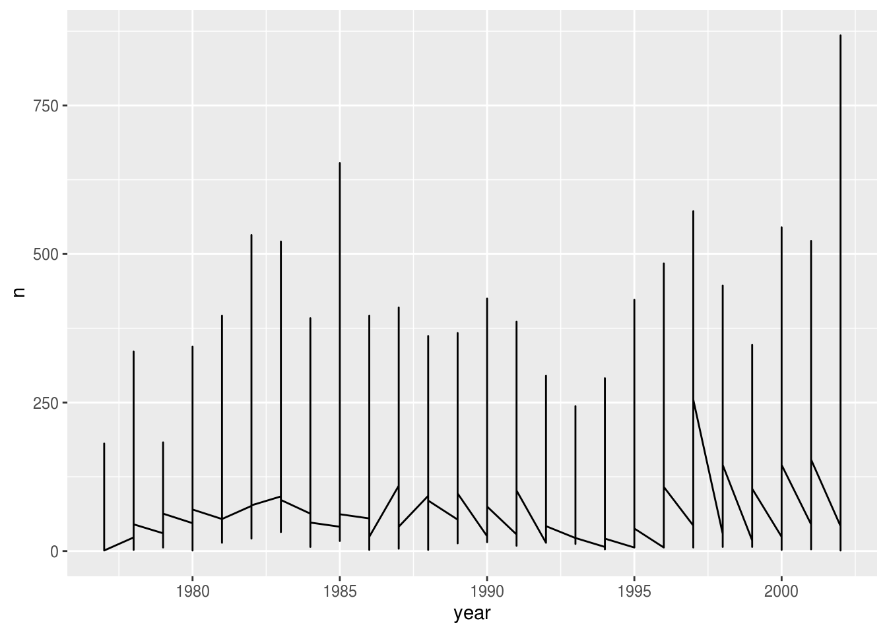
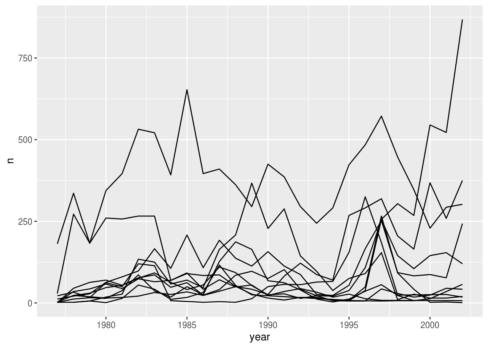
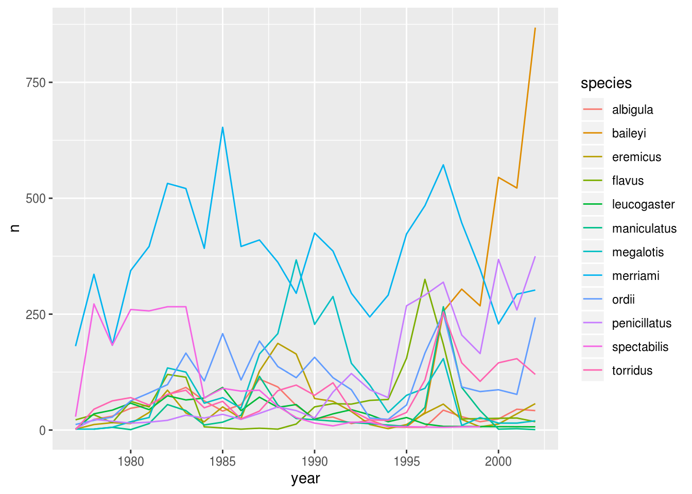
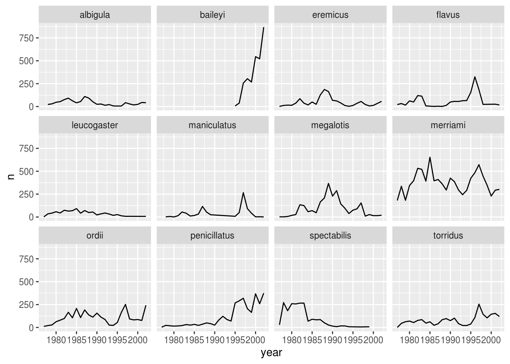
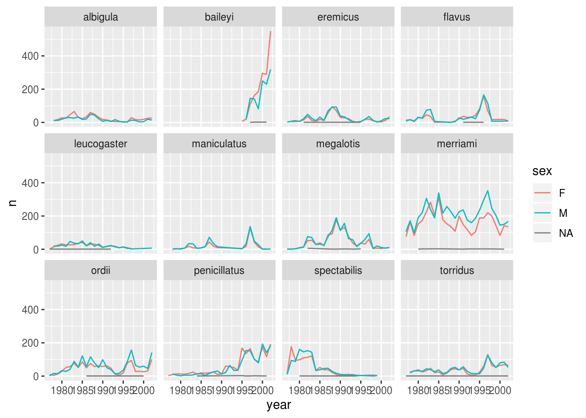
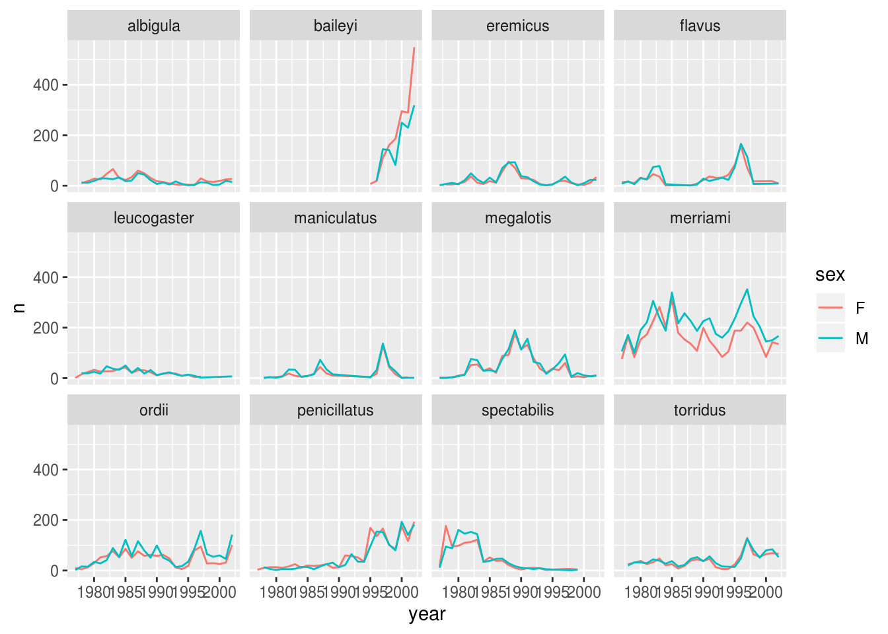
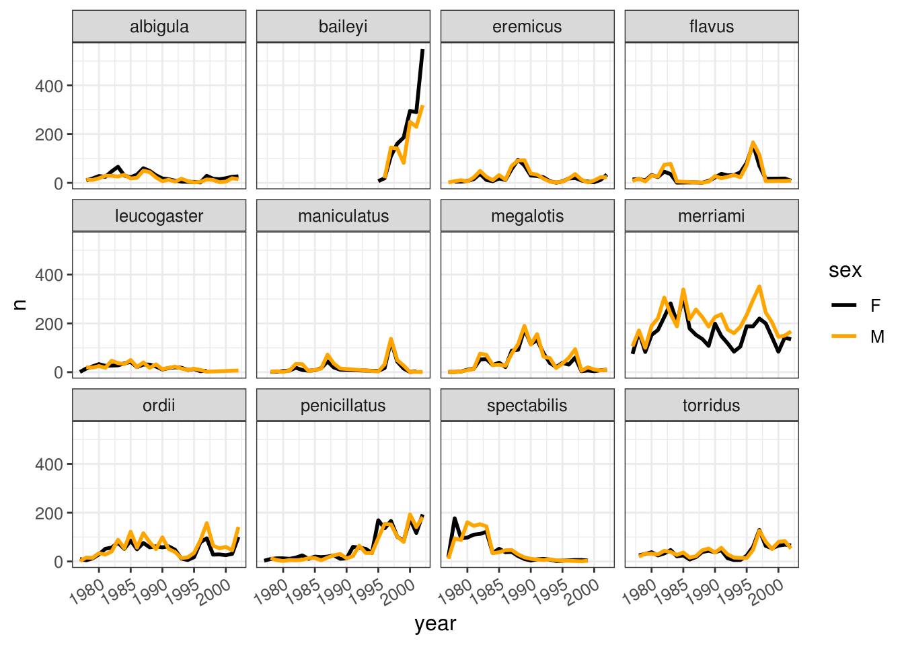

Lecture objectives
- Understand how to combine dplyr and ggplot.
- Understand and apply faceting in ggplot.
- Learn about tidy data.
- Transform data from the long to wide format.
Lecture outline
- Split-apply-combine… plot! (30 min)
- Faceting (10 min)
- Reshaping with gather and spread (30 min)
- Exporting data (15 min)
Start by loading the required packages. Both ggplot2 and dplyr are included in the tidyverse package collection.
## ── Attaching packages ─────────────────────────────────────── tidyverse 1.3.0 ──## ✔ ggplot2 3.2.1 ✔ purrr 0.3.3
## ✔ tibble 2.1.3 ✔ dplyr 0.8.4
## ✔ tidyr 1.0.2 ✔ stringr 1.4.0
## ✔ readr 1.3.1 ✔ forcats 0.4.0## ── Conflicts ────────────────────────────────────────── tidyverse_conflicts() ──
## ✖ dplyr::filter() masks stats::filter()
## ✖ dplyr::lag() masks stats::lag()Load the data we saved in the previous lesson, and prepare the filtered abundant species dataset from the end of lecture 4.
# Download if needed
# download.file("https://ndownloader.figshare.com/files/2292169", "portal_data.csv")
surveys <- read_csv('portal_data.csv')
surveys_abun_species <- surveys %>%
filter(!is.na(hindfoot_length) & !is.na(weight)) %>%
group_by(species) %>%
mutate(n = n()) %>% # add count value to each row
filter(n > 800) %>%
select(-n)## Parsed with column specification:
## cols(
## record_id = col_double(),
## month = col_double(),
## day = col_double(),
## year = col_double(),
## plot_id = col_double(),
## species_id = col_character(),
## sex = col_character(),
## hindfoot_length = col_double(),
## weight = col_double(),
## genus = col_character(),
## species = col_character(),
## taxa = col_character(),
## plot_type = col_character()
## )In this section, we will learn how to work with **dplyr** and **ggplot** together. Aided by the pipes (%>%), we can create a powerful data exploration workflow using these two packages.
Let’s calculate number of counts per year for each species. First we need to group the data and count records within each group:
surveys_abun_species %>%
group_by(year, genus) %>%
tally() %>%
arrange(desc(n)) # Adding arrange just to compare with histogram## # A tibble: 178 x 3
## # Groups: year [26]
## year genus n
## <dbl> <chr> <int>
## 1 2002 Chaetodipus 1243
## 2 1983 Dipodomys 953
## 3 1985 Dipodomys 951
## 4 2000 Chaetodipus 913
## 5 1982 Dipodomys 896
## 6 1997 Dipodomys 830
## 7 2001 Chaetodipus 781
## 8 1981 Dipodomys 733
## 9 1987 Dipodomys 688
## 10 1980 Dipodomys 667
## # … with 168 more rowsWe could assign this table to a variable, and then pass that variable to ggplot().
yearly_counts <- surveys_abun_species %>%
group_by(year, species) %>%
tally()
ggplot(yearly_counts, aes(x = n)) +
geom_histogram()## `stat_bin()` using `bins = 30`. Pick better value with `binwidth`.
Creating an intermediate variable would be preferable for time consuming calculations, because you would not want to do that operation every time you change the plot aesthetics.
If it is not a time consuming calculation or you would like the flexibility of changing the data summary and the plotting options in the same code chunk, you can pipe the output of your split-apply-combine operation to the plotting command:
surveys_abun_species %>%
group_by(year, species) %>%
tally() %>%
ggplot(aes(x = n)) +
geom_histogram()## `stat_bin()` using `bins = 30`. Pick better value with `binwidth`.We can perform a quick check that the plot corresponds to the table by coloring the histogram by species:
surveys_abun_species %>%
group_by(year, species) %>%
tally() %>%
ggplot(aes(x = n, fill = species)) + # `fill` is specific for histograms
geom_histogram()## `stat_bin()` using `bins = 30`. Pick better value with `binwidth`.
Let’s explore how the number of each genus varies over time. Longitudinal data can be visualized as a line plot with years on the x axis and counts on the y axis:
surveys_abun_species %>%
group_by(year, species) %>%
tally() %>%
ggplot(aes(x = year, y = n)) +
geom_line()
Unfortunately, this does not work because we plotted data for all the species together. We need to tell ggplot to draw a line for each species by modifying the aesthetic function to include group = species:
surveys_abun_species %>%
group_by(year, species) %>%
tally() %>%
ggplot(aes(x = year, y = n, group = species)) +
geom_line()
We will be able to distinguish species in the plot if we add colors (using color also automatically groups the data):
surveys_abun_species %>%
group_by(year, species) %>%
tally() %>%
ggplot(aes(x = year, y = n, color = species)) + # `color` groups automatically
geom_line() # try adding `size = 2`
ggplot has a special technique called faceting that allows the user to split one plot into multiple subplots based on a variable included in the dataset. We will use it to make a time series plot for each species:
surveys_abun_species %>%
group_by(year, species) %>%
tally() %>%
ggplot(aes(x = year, y = n)) + #
geom_line() +
facet_wrap(~ species)
Now we would like to split the line in each plot by the sex of each individual measured. To do that we need to make counts in the data frame grouped by year, species, and sex:
## # A tibble: 575 x 4
## # Groups: year, species [275]
## year species sex n
## <dbl> <chr> <chr> <int>
## 1 1977 eremicus M 2
## 2 1977 flavus F 14
## 3 1977 flavus M 8
## 4 1977 leucogaster F 1
## 5 1977 leucogaster <NA> 1
## 6 1977 megalotis F 1
## 7 1977 megalotis M 1
## 8 1977 merriami F 75
## 9 1977 merriami M 106
## 10 1977 ordii F 10
## # … with 565 more rowsWe can make the faceted plot by splitting further by sex using color (within a single plot):
surveys_abun_species %>%
group_by(year, species, sex) %>%
tally() %>%
ggplot(aes(x = year, y = n, color = sex)) +
geom_line() +
facet_wrap(~ species)
There are several observations where no sex was recorded. In this case, we are not really interested in the observations of unknown sex, so we can filter out those values.
surveys_abun_species %>%
filter(!is.na(sex)) %>%
group_by(year, species, sex) %>%
tally() %>%
ggplot(aes(x = year, y = n, color = sex)) +
geom_line() +
facet_wrap(~ species)
It is possible to specify exactly which colors to use, to avoid those that are hard to distinguish. We can also change the thickness of the lines, and adjust the x labels so that they don’t overlap.
color_names <- c('black', 'orange')
surveys_abun_species %>%
filter(!is.na(sex)) %>%
group_by(year, species, sex) %>%
tally() %>%
ggplot(aes(x = year, y = n, color = sex)) +
geom_line(size = 1) +
scale_color_manual(values = color_names) +
facet_wrap(~ species) +
theme_bw() +
theme(text = element_text(size=12),
axis.text.x = element_text(angle=30, hjust=1))
Use the filtered data frame for all of these questions.
dplyr is one part of a larger tidyverse that enables you to work with data in tidy data formats. tidyr enables a wide range of manipulations of the structure data itself. For example, the survey data presented here is almost in what we call a long format - every observation of every individual is its own row. This is an ideal format for data with a rich set of information per observation. It makes it difficult, however, to look at the relationships between measurements across plots. For example, what is the relationship between mean weights of different genera across the entire data set?
To answer that question, we’d want each plot to have a single row, with all of the measurements in a single plot having their own column. This is called a wide data format. For the surveys data as we have it right now, this is going to be one heck of a wide data frame! However, if we were to summarize data within plots and species, we might begin to have some relationships we’d want to examine.
Let’s see this in action. First, using dplyr, let’s create a data frame with the mean body weight of each genus by plot.
surveys_gw <- surveys %>%
filter(!is.na(weight)) %>%
group_by(genus, plot_id) %>%
summarize(mean_weight = mean(weight))
head(surveys_gw)## # A tibble: 6 x 3
## # Groups: genus [1]
## genus plot_id mean_weight
## <chr> <dbl> <dbl>
## 1 Baiomys 1 7
## 2 Baiomys 2 6
## 3 Baiomys 3 8.61
## 4 Baiomys 5 7.75
## 5 Baiomys 18 9.5
## 6 Baiomys 19 9.53spreadNow, to make this long data wide, we use spread from tidyr to spread out the different taxa into columns. spread takes three arguments: - the data, the key column (or column with identifying information), the values column (the one with the numbers/values). We’ll use a pipe so we can ignore the data argument.
## # A tibble: 6 x 11
## plot_id Baiomys Chaetodipus Dipodomys Neotoma Onychomys Perognathus Peromyscus
## <dbl> <dbl> <dbl> <dbl> <dbl> <dbl> <dbl> <dbl>
## 1 1 7 22.2 60.2 156. 27.7 9.62 22.2
## 2 2 6 25.1 55.7 169. 26.9 6.95 22.3
## 3 3 8.61 24.6 52.0 158. 26.0 7.51 21.4
## 4 4 NA 23.0 57.5 164. 28.1 7.82 22.6
## 5 5 7.75 18.0 51.1 190. 27.0 8.66 21.2
## 6 6 NA 24.9 58.6 180. 25.9 7.81 21.8
## # … with 3 more variables: Reithrodontomys <dbl>, Sigmodon <dbl>,
## # Spermophilus <dbl>Notice that some genera have NA values. That’s because some of those genera don’t have any record in that plot. Sometimes it is fine to leave those as NA. Sometimes we want to fill them as zeros, in which case we would add the argument fill=0.
## # A tibble: 6 x 11
## plot_id Baiomys Chaetodipus Dipodomys Neotoma Onychomys Perognathus Peromyscus
## <dbl> <dbl> <dbl> <dbl> <dbl> <dbl> <dbl> <dbl>
## 1 1 7 22.2 60.2 156. 27.7 9.62 22.2
## 2 2 6 25.1 55.7 169. 26.9 6.95 22.3
## 3 3 8.61 24.6 52.0 158. 26.0 7.51 21.4
## 4 4 0 23.0 57.5 164. 28.1 7.82 22.6
## 5 5 7.75 18.0 51.1 190. 27.0 8.66 21.2
## 6 6 0 24.9 58.6 180. 25.9 7.81 21.8
## # … with 3 more variables: Reithrodontomys <dbl>, Sigmodon <dbl>,
## # Spermophilus <dbl>We can now do things like plot the weight of Baiomys against Chaetodipus or examine their correlation.
## plot_id Baiomys Chaetodipus Dipodomys Neotoma
## plot_id 1.0000000 -0.11041371 0.2945925 -0.165214440 -0.55050668
## Baiomys -0.1104137 1.00000000 0.3687496 -0.050774964 -0.03268885
## Chaetodipus 0.2945925 0.36874958 1.0000000 0.325918149 -0.27649287
## Dipodomys -0.1652144 -0.05077496 0.3259181 1.000000000 0.12159544
## Neotoma -0.5505067 -0.03268885 -0.2764929 0.121595440 1.00000000
## Onychomys -0.4805452 -0.08689875 -0.3254973 0.093274704 0.43466237
## Perognathus 0.2468167 0.16572228 0.1799742 0.134225846 -0.25623672
## Peromyscus -0.3042821 0.10570094 0.2109187 0.219996783 0.30722919
## Reithrodontomys -0.2693462 0.34710430 -0.2258934 -0.142993836 0.31713778
## Sigmodon 0.2745083 -0.01421689 0.1971181 -0.092613012 0.04665664
## Spermophilus 0.1342651 -0.05423613 -0.3096137 -0.003720851 -0.14037233
## Onychomys Perognathus Peromyscus Reithrodontomys Sigmodon
## plot_id -0.48054516 0.2468167 -0.3042821 -0.26934622 0.27450825
## Baiomys -0.08689875 0.1657223 0.1057009 0.34710430 -0.01421689
## Chaetodipus -0.32549730 0.1799742 0.2109187 -0.22589344 0.19711806
## Dipodomys 0.09327470 0.1342258 0.2199968 -0.14299384 -0.09261301
## Neotoma 0.43466237 -0.2562367 0.3072292 0.31713778 0.04665664
## Onychomys 1.00000000 -0.1929882 0.1146881 -0.03186637 -0.19977238
## Perognathus -0.19298820 1.0000000 0.1813099 -0.27968468 -0.24933409
## Peromyscus 0.11468812 0.1813099 1.0000000 0.29246412 0.15628042
## Reithrodontomys -0.03186637 -0.2796847 0.2924641 1.00000000 0.16463343
## Sigmodon -0.19977238 -0.2493341 0.1562804 0.16463343 1.00000000
## Spermophilus 0.37939827 0.1057038 -0.1593698 -0.21747037 -0.27040148
## Spermophilus
## plot_id 0.134265067
## Baiomys -0.054236130
## Chaetodipus -0.309613679
## Dipodomys -0.003720851
## Neotoma -0.140372334
## Onychomys 0.379398267
## Perognathus 0.105703800
## Peromyscus -0.159369768
## Reithrodontomys -0.217470366
## Sigmodon -0.270401476
## Spermophilus 1.000000000gatherWhat if we had the opposite problem, and wanted to go from a wide to long format? For that, we use gather to sweep up a set of columns into one key-value pair. We give it the arguments of a new key and value column name, and then we specify which columns we either want or do not want gathered up. So, to go backwards from surveys_gw_wide, and exclude plot_id from the gathering, we would do the following:
## # A tibble: 6 x 3
## plot_id genus mean_weight
## <dbl> <chr> <dbl>
## 1 1 Baiomys 7
## 2 2 Baiomys 6
## 3 3 Baiomys 8.61
## 4 4 Baiomys NA
## 5 5 Baiomys 7.75
## 6 6 Baiomys NANote that now the NA genera are included in the long format. Going from wide to long to wide can be a useful way to balance out a dataset so every replicate has the same composition.
We could also have used a specification for what columns to include. This can be useful if you have a large number of identifying columns, and it’s easier to specify what to gather than what to leave alone. And if the columns are sequential, we don’t even need to list them all out - just use the : operator!
## # A tibble: 6 x 3
## plot_id genus mean_weight
## <dbl> <chr> <dbl>
## 1 1 Baiomys 7
## 2 2 Baiomys 6
## 3 3 Baiomys 8.61
## 4 4 Baiomys NA
## 5 5 Baiomys 7.75
## 6 6 Baiomys NAMake a wide data frame with year as columns, plot_id as rows, and the values are the number of genera per plot. You will need to summarize before reshaping, and use the function n_distinct to get the number of unique types of a genus. It’s a powerful function! See ?n_distinct for more.
Now take that data frame, and make it long again, so each row is a unique plot_id - year combination.
The surveys data set is not truly wide or long because there are two columns of measurement - hindfoot_length and weight. This makes it difficult to do things like look at the relationship between mean values of each measurement per year in different plot types. Let’s walk through a common solution for this type of problem. First, use gather to create a truly long dataset where we have a key column called measurement and a value column that takes on the value of either hindfoot_length or weight. Hint: You’ll need to specify which columns are being gathered.
With this new truly long data set, calculate the average of each measurement in each year for each different plot_type. Then spread them into a wide data set with a column for hindfoot_length and weight. Hint: Remember, you only need to specify the key and value columns for spread.
Now that you have learned how to use dplyr to extract information from or summarize your raw data, you may want to export these new datasets to share them with your collaborators or for archival.
Similar to the read_csv() function used for reading CSV files into R, there is a write_csv() function that generates CSV files from data frames.
Before using write_csv(), we are going to create a new folder, data-processed, in our working directory that will store this generated dataset. We don’t want to store manipulated datasets in the same directory as our raw data. It’s good practice to keep them separate. The raw data would ideally be put in a data-raw folder, which should only contain the raw, unaltered data, and should be left alone to make sure we don’t delete or modify it from how it was when we downloaded or recorded it ourself. In contrast, our R code will create the contents of the data-processed directory, so even if the files it contains are deleted, we can always re-generate them.
Use the getwd() function to find out which is the current working directory.
## [1] "/home/travis/build/UofTCoders/rcourse"Navigate to this directory in your file browser and create a folder called data-processed.
Alternatively, you could use R to create this directory.
dir.create("data-processed")
# To suppress the warning, we could do
dir.create("data-processed", showWarnings = FALSE)
# Another alternative would be to use a conditional expression, which only
# creates the directory *if* it does not already exist. The syntax here is
# similar to the for loop we created in the second lecture.
if (!dir.exists('data-processed')) {
dir.create("data-processed")
}We are going to prepare a cleaned up version of the data without NAs. Let’s start by removing observations for which the species_id is missing. Let’s also remove observations for which weight and the hindfoot_length are missing. This dataset should also only contain observations of animals for which the sex has been determined:
surveys_complete <- surveys %>%
filter(!is.na(species_id), # remove missing species_id
!is.na(weight), # remove missing weight
!is.na(hindfoot_length), # remove missing hindfoot_length
!is.na(sex)) # remove missing sex
# This expression is a succinct alternative to the above
surveys_complete_comcas <- surveys %>%
filter(complete.cases(species_id, weight, hindfoot_length, sex))
# This is even briefer, but omits observations with NA in *any* column.
# There is no way to control which columns to use, but it is common to want
# to exclude all NAs, which in our case corresponds to the columns listed above.
surveys_complete_naomit <- na.omit(surveys)
# Compare the dimensions of the original and the cleaned data frame
dim(surveys)## [1] 34786 13## [1] 30676 13## [1] 30676 13## [1] 30676 13Now that our dataset is ready, we can save it as a CSV file in our data-processed folder.
Parts of this lesson material were taken and modified from Data Carpentry under their CC-BY copyright license. See their lesson page for the original source.
This work is licensed under a Creative Commons Attribution 4.0 International License. See the licensing page for more details about copyright information.